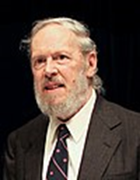
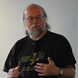
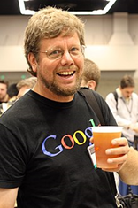

| 1 |
Dennis Ritchie |
 |
C |
1972 |
Ko'p paradigma : imperativ ( protsessual ), tuzilgan |
| 2 |
James Gosling |
 |
Java |
1995 |
Ko'p paradigma : umumiy , ob'ektga yo'naltirilgan ( sinfga asoslangan
), funktsional , imperativ , aks ettiruvchi , parallel
|
| 3 |
Brendan Eich |
|
JavaScript |
1995 |
Ko'p paradigma : hodisaga asoslangan , funktsional , imperativ ,
protsessual , ob'ektga yo'naltirilgan |
| 4 |
DGuido van Rossum |
 |
Python |
1991 |
Multi-paradigm: object-oriented, procedural (imperative), functional,
structured, reflective |
| 5 |
Rasmus Lerdorf |
|
PHP |
1995 |
Ko'p paradigma : imperativ , funktsional , ob'ektga yo'naltirilgan ,
protsessual , aks ettiruvchi |